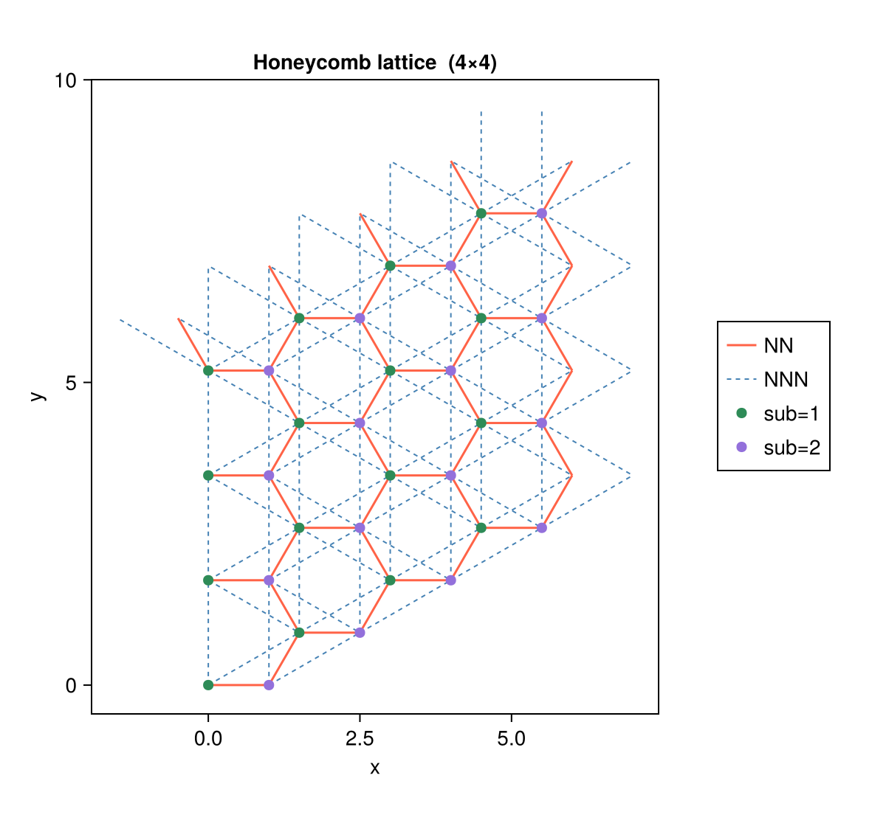
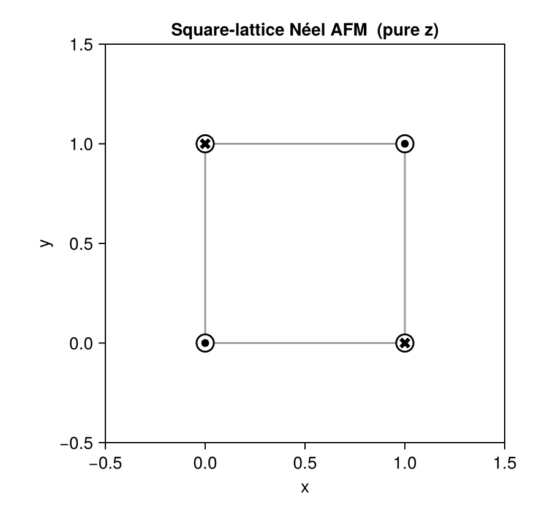
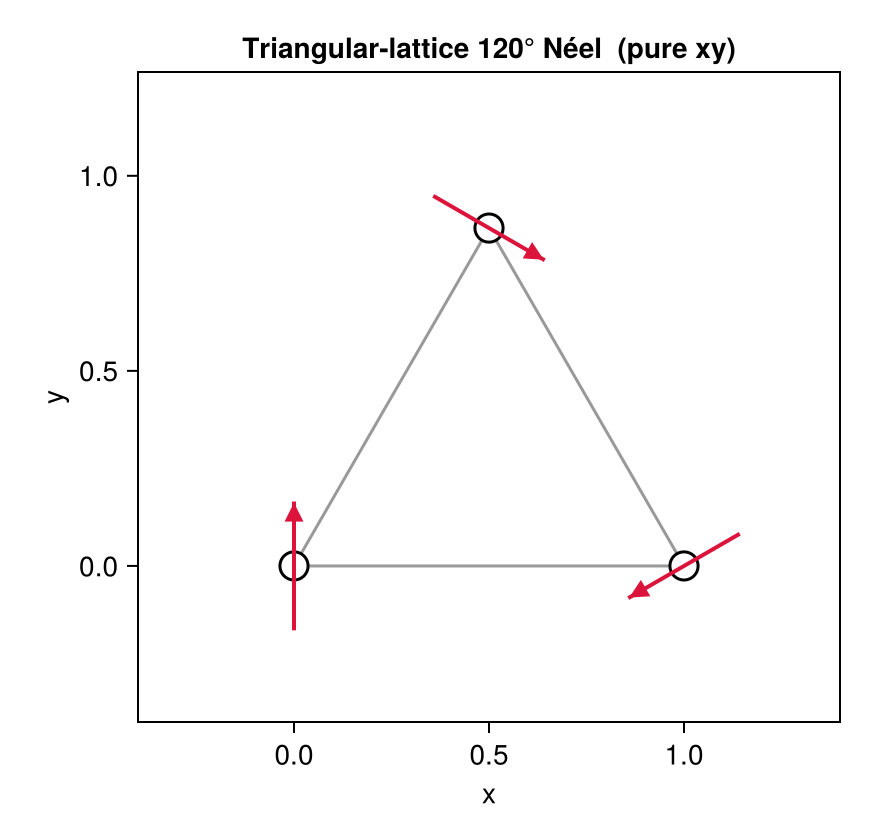
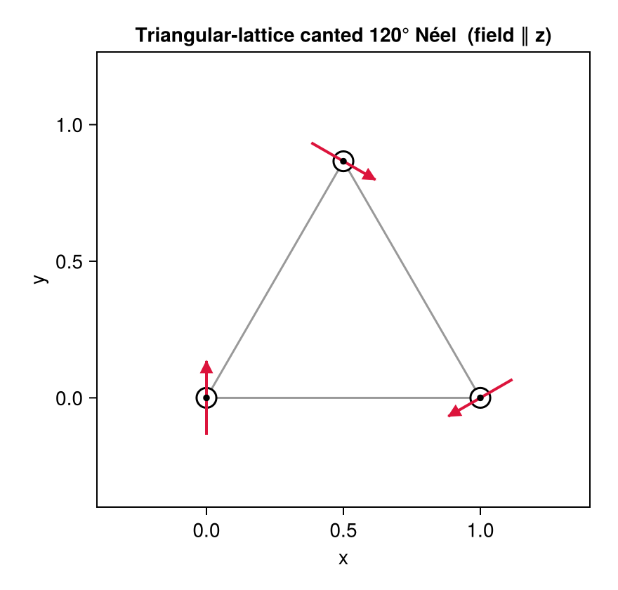

Visualization
MeanFieldTheories.jl provides built-in visualization through a Makie package extension. Load any Makie backend before calling the plot functions — no other change to your code is needed:
using CairoMakie # save to file (PNG, PDF, SVG, …)
using GLMakie # interactive window
using WGLMakie # Jupyter / Pluto notebookLattice Visualization
MeanFieldTheories.plot_lattice — Function
plot_lattice(lattice; kwargs...) -> FigureVisualize a Lattice: sites (optionally colored by a DOF) and one or more sets of bonds drawn as line segments.
Requires Makie to be loaded before calling:
using GLMakie # interactive
using CairoMakie # save to fileArguments
lattice: theLatticeto visualize
Keyword arguments
| kwarg | default | description |
|---|---|---|
bond_lists | nothing | Vector{Vector{Bond}} or single Vector{Bond} |
bond_colors | auto palette | per-list line colors |
bond_labels | [] | per-list legend labels |
bond_widths | 1.5 | per-list or scalar line width |
bond_styles | :solid | per-list or scalar line style (:solid, :dash, …) |
site_groupby | nothing | Symbol: DOF name to split sites into colored groups |
site_colors | auto palette | per-group or scalar site color |
site_labels | auto | per-group labels (default: "<dof>=<value>") |
site_markersize | 10 | site marker size |
title | "" | figure title |
Example
using CairoMakie
unitcell = Lattice([Dof(:cell,1), Dof(:sub,2,[:A,:B])],
[QN(cell=1,sub=1), QN(cell=1,sub=2)],
[[0.0,0.0],[1.0,0.0]]; vectors=[[0.0,√3],[1.5,√3/2]])
lattice = Lattice(unitcell, (4, 4))
nn = bonds(lattice, (:p,:p), 1)
nnn = bonds(lattice, (:p,:p), 2)
fig = plot_lattice(lattice;
bond_lists = [nn, nnn],
bond_colors = [:tomato, :steelblue],
bond_labels = ["NN", "NNN"],
site_groupby = :sub,
site_colors = [:seagreen, :mediumpurple])
save("lattice.png", fig)plot_lattice(lattice; kwargs...) draws a tiled lattice with any number of bond sets and optional sublattice coloring.
Example: Honeycomb lattice
using MeanFieldTheories
using CairoMakie
# Honeycomb primitive vectors and 2-site unit cell
const a1 = [0.0, sqrt(3.0)]
const a2 = [1.5, sqrt(3.0)/2]
unitcell = Lattice(
[Dof(:cell, 1), Dof(:sub, 2, [:A, :B])],
[QN(cell=1, sub=1), QN(cell=1, sub=2)],
[[0.0, 0.0], [1.0, 0.0]];
vectors = [a1, a2])
lattice = Lattice(unitcell, (4, 4))
nn_bonds = bonds(lattice, (:p, :p), 1)
nnn_bonds = bonds(lattice, (:p, :p), 2)
fig = plot_lattice(lattice;
bond_lists = [nn_bonds, nnn_bonds],
bond_colors = [:tomato, :steelblue],
bond_labels = ["NN", "NNN"],
bond_widths = [1.5, 1.0],
bond_styles = [:solid, :dash],
site_groupby = :sub,
site_colors = [:seagreen, :mediumpurple],
title = "Honeycomb lattice (4×4)")
save("lattice_bonds.png", fig)
Magnetization Visualization
MeanFieldTheories.plot_magnetization — Function
plot_magnetization(mags, positions; kwargs...) -> FigureVisualize local magnetic moments as arrows on a lattice.
Requires Makie to be loaded before calling:
using GLMakie # interactive 3D
using CairoMakie # save to file
using WGLMakie # Jupyter notebookArguments
mags: output oflocal_magnetizationpositions: coordinates of each site, same order asmags. Each element is a 2- or 3-component vector[x, y]or[x, y, z].
Keyword arguments
| kwarg | default | description |
|---|---|---|
arrow_color | :crimson | arrow color |
arrow_frac | 0.33 | max arrow length = min_dist × arrow_frac |
shaft_lw | 2.0 | arrow shaft line width |
head_px | 13 | arrowhead marker size (pixels) |
head_frac | 0.32 | fraction of arrow length taken by the head |
site_markersize | 20 | outer circle marker size |
dot_size_frac | 0.45 | inner ⊙/⊗ max size as fraction of site_markersize |
bonds | nothing | Vector{Tuple{Int,Int}} of site index pairs to draw |
bond_color | :gray60 | bond line color |
bond_width | 1.5 | bond line width |
unitcell_vecs | nothing | two lattice vectors to draw unit cell outline |
unitcell_origin | nothing | origin of unit cell (defaults to first site) |
axis_padding | 0.5 | extra space around sites on each axis |
title | "" | figure title |
Layout
Single top-view (xy) panel. All three spin components are encoded simultaneously:
- Arrow: direction =
(mx, my), length ∝sqrt(mx²+my²)(in-plane projection) - ⊙ dot:
mz > 0(spin out of page), size ∝mz - ⊗ cross:
mz < 0(spin into page), size ∝|mz|
Sites with purely in-plane spins show only arrows; purely z-polarized sites show only ⊙/⊗; canted spins show both simultaneously.
Example
using CairoMakie
result = solve_hfk(...)
mags = local_magnetization(dofs, result.G_k)
fig = plot_magnetization(mags, [[0.0,0.0],[1.0,0.0]];
bonds = [(1,2)],
unitcell_vecs = [[3/2, √3/2], [0.0, √3]],
title = "KMH ground state")
save("magnetization.pdf", fig)plot_magnetization(mags, positions; kwargs...) encodes the full 3D spin vector in a single top-view panel:
| Element | Meaning |
|---|---|
| Arrow | direction = $(m_x, m_y)$; length $\propto \sqrt{m_x^2+m_y^2}$ |
| ⊙ dot | $m_z > 0$ (spin out of page), size $\propto m_z$ |
| ⊗ cross | $m_z < 0$ (spin into page), size \propto |
mags is the output of local_magnetization, and positions is a vector of site coordinates (e.g. unitcell.coordinates). Bond pairs for the visualization can be extracted from the package's bond infrastructure with a small helper:
function bond_pairs(bond_list, lattice)
state_idx = Dict(s => i for (i, s) in enumerate(lattice.position_states))
seen = Set{Tuple{Int,Int}}()
for b in bond_list
length(b.states) == 2 || continue
i = get(state_idx, b.states[1], nothing)
j = get(state_idx, b.states[2], nothing)
(isnothing(i) || isnothing(j)) && continue
push!(seen, (min(i, j), max(i, j)))
end
return sort!(collect(seen))
endCase 1 — Square lattice Néel AFM (pure z)
All spins point along ±z; only ⊙/⊗ markers appear, no arrows.
sq_uc = Lattice(
[Dof(:site, 4)],
[QN(site=i) for i in 1:4],
[[0.0,0.0],[1.0,0.0],[0.0,1.0],[1.0,1.0]];
vectors = [[2.0,0.0],[0.0,2.0]])
sq_bonds = bond_pairs(bonds(sq_uc, (:p,:p), 1), sq_uc)
mz0 = 0.45
afm_mags = [
(label=(site=1,), n=1.0, mx=0.0, my=0.0, mz=+mz0, m=mz0, theta_deg=0.0, phi_deg=0.0),
(label=(site=2,), n=1.0, mx=0.0, my=0.0, mz=-mz0, m=mz0, theta_deg=180.0, phi_deg=0.0),
(label=(site=3,), n=1.0, mx=0.0, my=0.0, mz=-mz0, m=mz0, theta_deg=180.0, phi_deg=0.0),
(label=(site=4,), n=1.0, mx=0.0, my=0.0, mz=+mz0, m=mz0, theta_deg=0.0, phi_deg=0.0),
]
fig = plot_magnetization(afm_mags, sq_uc.coordinates;
title = "Square-lattice Néel AFM (pure z)",
bonds = sq_bonds)
save("case1_square_afm_z.png", fig)
Case 2 — Triangular lattice 120° Néel order (pure in-plane)
Spins rotate by 120° per sublattice in the xy-plane; only arrows appear, no ⊙/⊗. The magnetic unit cell is the minimal √3×√3 reconstruction (3 sites, one per sublattice).
tri_uc = Lattice(
[Dof(:site, 3)],
[QN(site=i) for i in 1:3],
[[0.0, 0.0], [1.0, 0.0], [0.5, sqrt(3)/2]];
vectors = [[3/2, sqrt(3)/2], [0.0, sqrt(3)]])
tri_bonds = bond_pairs(bonds(tri_uc, (:p,:p), 1), tri_uc)
m0 = 0.45
tri_mags = [
(label=(site=1,), n=1.0, mx=0.0, my=+m0, mz=0.0, ...), # 90°
(label=(site=2,), n=1.0, mx=-m0*sqrt(3)/2, my=-m0/2, mz=0.0, ...), # −150°
(label=(site=3,), n=1.0, mx=+m0*sqrt(3)/2, my=-m0/2, mz=0.0, ...), # −30°
]
fig = plot_magnetization(tri_mags, tri_uc.coordinates;
title = "Triangular-lattice 120° Néel (pure xy)",
bonds = tri_bonds,
axis_padding = 0.4)
save("case2_triangular_120neel_xy.png", fig)
Case 3 — Canted 120° Néel under uniform magnetic field (all three components)
A uniform field along +z cants all spins by θ = 55° while preserving the 120° in-plane arrangement. Each site shows both ⊙ (uniform positive $m_z$) and an in-plane arrow.
θ_cant = 55 * π / 180
mz_c = m0 * cos(θ_cant)
mxy_c = m0 * sin(θ_cant)
cant_mags = [
(label=(site=1,), n=1.0, mx=0.0, my=+mxy_c, mz=mz_c, ...),
(label=(site=2,), n=1.0, mx=-mxy_c*sqrt(3)/2, my=-mxy_c/2, mz=mz_c, ...),
(label=(site=3,), n=1.0, mx=+mxy_c*sqrt(3)/2, my=-mxy_c/2, mz=mz_c, ...),
]
fig = plot_magnetization(cant_mags, tri_uc.coordinates;
title = "Triangular-lattice canted 120° Néel (field ∥ z)",
bonds = tri_bonds,
axis_padding = 0.4)
save("case3_canted_120neel_xyz.png", fig)
The complete runnable script for all three cases is at examples/Plot_magnetization/run.jl. It uses local_magnetization output directly from a solved HF problem rather than manually constructed NamedTuples.